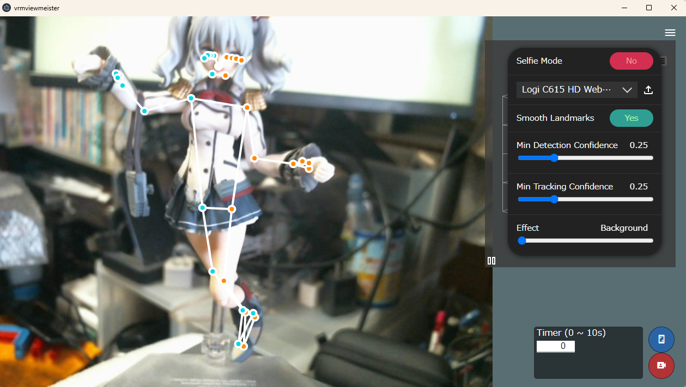

7.3. How to use 3D model
7.3.1. Open/manipulate 3D models
This is the basic usage of this application. Load and move general 3D models such as VRM, obj and FBX.
See Basics of object manipulation for basic functions. There you will find the following features:
How to open an object
How to use the history of opened objects
How to select objects
How to use (global) position, rotation and magnification
etc…
If you want to know about the object properties themselves, see Property list.
See Manipulating Objects if you want to know about object operations and supplementary information.
Hint
When opening a 3D model file, it is recommended that you increase the memory usage setting in advance to the size you think is necessary.
However, if the memory of the device you are using is low, the operation may become unstable if you secure too much with this application. It is up to you to decide how much memory you should reserve.
7.3.2. Pose and animate a 3D model
This is the main purpose of this application. You can easily create keyframe animations without using highly functional applications such as the Unity editor or Blender.
- Basic explanation
See What is an animation project? and Animation project structure.
- Operation of VRM
See VRoid/VRM for more details. In addition, the pose is reflected immediately just by moving it without registering it in the key frame.
- About registration of animation
Note
The bone movement system of this application is based on the IK method. Since it is not the FK method that moves only by rotating bones, the position of the limbs and waist may vary slightly depending on the height and build of the VRM.
When reading a pose or motion file with a height difference, the height difference is automatically calculated and resolved, but it is not perfect. please note that.
The FK method is planned to be supported in the future.
7.3.2.1. Various ways to run VRM
This application provides the following methods to run VRM. Each has different characteristics and accuracy for posing.
- IK marker
Basic operation method. By moving the IK marker, each part of the VRM moves and rotates toward that position and poses accordingly. High precision.
See Working with VRM IK markers for more information.

- Pose recognition by MediaPipe AI
The Pose function of Google’s MediaPipe detects the pose from the object captured by the webcam and obtains a pose close to it. Low precision.
See Detect pauses with MediaPipe for details.
The bone position/rotation information returned by MediaPipe is different from that of Unity and the IK of this application, so conversion is necessary. Therefore, the accuracy is considered to be low. It can be used effectively if you allow the flow of making a pose close to the model’s video / image, and then adjusting it manually.
We will continue to adjust the accuracy in the future.
- Specify directly in the spreadsheet
Enter the position and rotation of the IK markers in each cell in spreadsheet form, and pose accordingly. High precision.
See Numerical manipulation of IK markers for details.

Instead of moving and rotating the bones by moving the IK marker, you can directly enter the amount of movement and rotation with a decimal point in the spreadsheet. You can also copy and save to Excel or Google Sheets. Of course, you can also paste into the spreadsheet of this app in reverse.
In addition, it can also be used for fine correction of poses.
{kind=link}
7.3.2.2. Invert VRM pose
Although it is a function only for the spreadsheet, you can invert the pose of the VRM.
Click
Batch change IK positionin theIK, whole bodypanel of the VRM properties to display the batch change window for IK markers.Click
 on the top toolbar.
on the top toolbar.Click
 Apply Pose.
Apply Pose.
The current pose will be reversed. Since the movement is just replacing the cells of the spreadsheet, it is also possible to change only a part while reversing if you manually enter it at that time.
7.3.2.3. Convenient use of IK markers
IK markers don’t just move. You can use it conveniently as follows. See special operation for details.
- move multiple at the same time
Although it is only a VRM that has multiple IK markers at the same time, you can select multiple IK markers and move them.
Hold down the
Ctrl keyand click on one or more IK markers. Then, multiple IK markers turn red. If you move or rotate in that state, you can move it at the same time.However, since there is a collision detection, please adjust the visibility by zooming in the camera as needed.
- Undo moving IK markers
Shift key+Zcan be used to undo the previous movement/rotation of the IK marker.You can redo the return with
Shift key+Y.Caution
Please note that it is not a Ctrl key like Ctrl + Z in normal apps.
7.3.3. Use with poses and motions
Here, we will mainly summarize the explanations on how to handle the poses and motions themselves.
What you can do with this app and output files to the outside correspond as follows.
action |
target |
output file |
reference page |
|---|---|---|---|
Pose |
VRM |
|
|
Motion |
All objects |
|
|
Project |
All objects + current animation settings |
|
Poses and motions do not depend on the actual object, so you can load it into a role that assigns another object and reproduce it. By distributing pose files and motion files, it is possible for other users to use them.
Warning
For VRMs, extreme height differences can lead to unacceptable deviations. When distributing it, it is a good idea to inform the height of the original VRM as reference information.
It is not a method that directly specifies the rotation angle of the bone like MMD, but it is an IK method, so the error absorption of height and physique is not complete. please note that.
Project is not suitable for distribution to other users because it tries to open the object files that were originally opened. However, by assigning a cast to a role operation, the motion can be reproduced as much as possible on different objects.
If you are thinking of distributing it, it is recommended that you check it in advance by deleting the history, opening the project file, and trying to assign a cast to a role.
7.3.4. Associating timelines with objects
For details on the relationship between timelines and objects, see Animation project structure as above.
In this app, you can enjoy the same pose and motion with another object by replacing only the actual object later on the role (timeline) that has been pose and motion once.
7.3.5. Adjust animation FPS
- Coordination on a project-by-project basis
You can adjust the FPS for each animation project.
See Set number of frames and FPS for details. Also, if you do not want to change the FPS, but want to change only the reference value of the default duration when registering keyframes, see Set default interval.
- Adjustment for each timeline and keyframe
- When following the FPS and duration determined by the project, the duration for each keyframe is basically registered with an appropriate distance between frames according to the purpose. Then the duration is automatically calculated and set.According to the duration of the project, a huge number of frames may be required. It doesn’t matter if it’s labor-intensive.

If you want to freely create motion with a small number of frames, it is a good idea to directly edit the duration in the keyframe settings.
See Set keyframe intervals for more information.